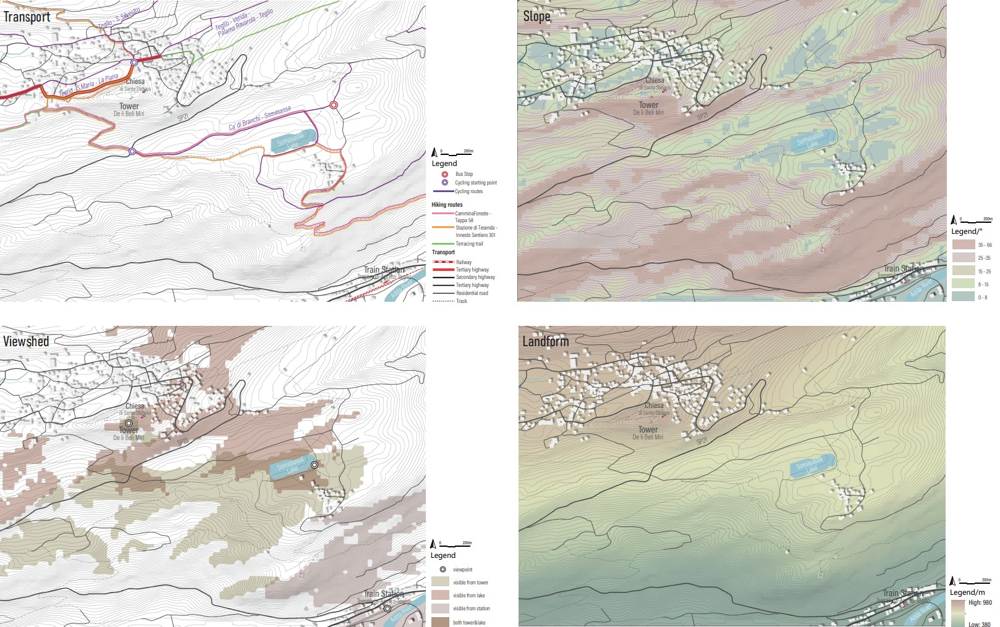

Landscape and Infrastructure Design Studio 2022-2023
Landscape and Infrastructure Design Studio 2022-2023
'...Two roads diverged in a wood, and I - I took the one less traveled by, And that has made all the difference.'
BY: Chen Qian, Elena Benedetti, Nadia Zubair Khaleel, Ting Jiang
Master: LANDSCAPE ARCHITECTURE - LAND LANDSCAPE HERITAGE /
Professors: Matteo Poli, Paolo Bozzuto, Marco Mancini /
Students: Chen Qian, Elena Benedetti, Nadia Zubair Khaleel, Ting Jiang /
Project Location: Teglio / Sondrio / Lombardy /Show on Google Maps
09.2022 - 01.2023 /
Published on January 26, 2023
On October 7th, 2022, we visited Teglio together. The site is a town in the Province of Sondrio, in Lombardy. It belongs to the area of Valtellina. In Teglio they grow rye, vines and buckwheat, which is used for pizzoccheri. Agriculture is an important economic resource for the town. Furthermore, tourism give a contribute to it.
The area of designs we have chosen includes the "de li beli miri" tower, a centuries-old landmark from where you can overlook the whole town, lake somasassa, the Tresenda-Aprica-Teglio train station and vineyards.


Using database from Geoportale della Lombardia, we managed to analyse the landform, slope and viewshed from selected important view points. The site has a large difference in elevation from 380m to 980m. The maximum slope within the site is 66 degrees, mainly around the tower and on the south area of the site. Standing on the south-eastern shore of the lake, the tower can be seen. From the top of the hill, the lake is also visible. From the railway station, however, the view is mostly blocked looking upwards.
It is very difficult to reach the summit via the existing trains and public transport, but there is a very wide range of cycling and hiking routes within the site. During the trip to Teglio, we notice that there are only two means of transportation to reach the top of the town, via bus (5 rounds per day) or on foot. It takes 1hr 25 minutes to reach the top on foot. The mobility can be an important issue in this area, which means people could not see the unique views continuely and deeply. In our project, we created different kinds of ways for visitors and locals to experience from the bottom to the top.
